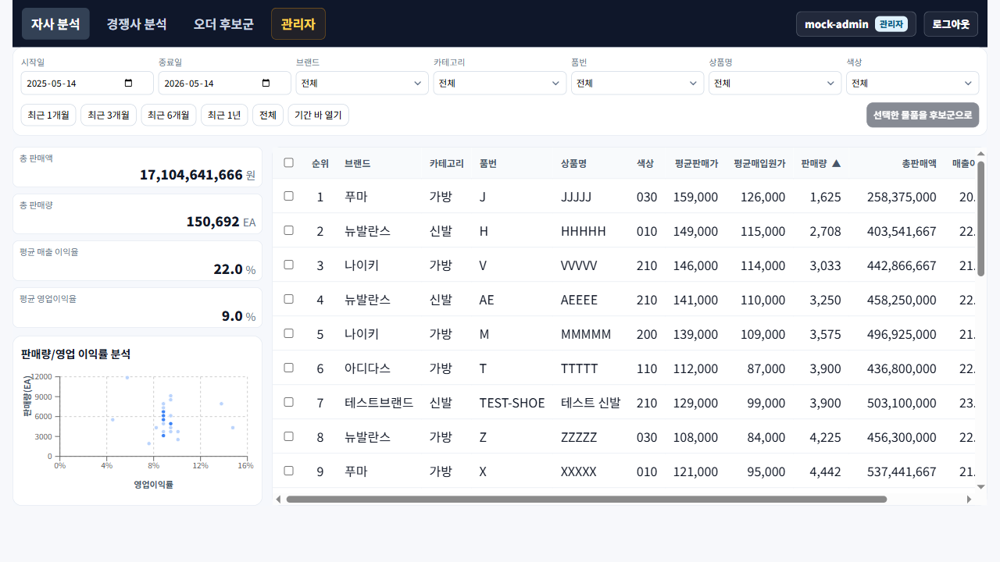

자사 분석 첫 진입 화면에서 필터, KPI, 차트, 목록을 읽는 방법을 짧게 정리합니다.

2026-05-14
로그인 후 기본 진입 화면은 자사 분석입니다.
처음 보는 사용자는 위에서 아래로 읽으면 됩니다.
시작일/종료일과 브랜드·카테고리·상품명 조건이 의도한 범위인지 먼저 확인합니다.
총 판매액과 평균 영업이익률로 현재 조건의 전체 규모를 봅니다.
판매액과 수익성 기준으로 특이 상품 또는 후보 상품을 찾습니다.
상품 목록은 정렬, 체크박스 선택, 행 클릭을 통한 상세 확인의 출발점입니다.
첫 화면에서는 “조건 설정 → 후보 좁히기”까지만 해도 충분합니다.
분석하려는 기간, 브랜드, 카테고리, 상품 조건을 맞춥니다.
전체 판매 규모와 포지셔닝 분포를 먼저 훑습니다.
판매량, 판매액, 영업이익률 등 기준으로 목록을 정렬합니다.
행을 클릭해 상세를 보거나 체크박스로 후보군 작업을 준비합니다.
로그인 후 첫 화면을 읽는 방법까지만 다룹니다. 다음 장에서 상품 상세 드로워와 후보군 저장 흐름을 이어 붙이면 됩니다.